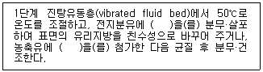

1과목: 식품위생학
1. 과채류 등의 식물성 색소 고정을 위하여 사용하는 첨가물은?
2. 돼지고기의 생식으로 감염될 수 있는 기생충은?
3. 사람이 일생동안 섭취하였을 때 현시점에서 알려진 사실에 근거하여 바람직하지 않은 영향이 나타나지 않을 것으로 예상되는 물질의 1일 섭취량을 나타낸 것은?
4. 미생물의 살균이나 소독 방법 중 화학적 방법은?
5. 급성독성은 비교적 강하지 않으나 화학적으로 안정하여 잘 분해되지 않는 농약류는?
6. 황색포도상구균 식중독의 특징이 아닌 것은?
7. 어떤 첨가물의 LD50의 값이 높을 경우 그 의미는?
8. 우유 중에서 많이 발견될 수 있는 aflatoxin은?
9. HACCP의 7원칙에 해당하지 않는 것은?
10. 된장, 고추장에 주로 사용하는 보존료는?
11. 식품 중 단백질과 질소 화합물을 함유한 식품성분이 미생물의 작용으로 분해되어 악취와 유해물질을 생성하여 식품 가치를 잃어버리는 현상은?
12. 콜레라에 대한 설명으로 틀린 것은?
13. 방사성 물질이 인체에 침착하여 장해를 주는 부위를 연결한것 중 가장 거리가 먼 것은?
14. 다음 중 보존료의 사용목적이 아닌 것은?
15. 인축공통전염병이 아닌 것은?
16. 식품첨가물의 정의에 대한 설명으로 적합하지 않은 것은?
17. 식품용 기구, 용기 또는 포장과 위생상 문제가 되는 성분과의관계를 나타낸 것으로 틀린 것은?
18. 분변검사로 충란을 검출할 수 없는 기생충은?
19. 건강기능식품의 기준 및 규격에서 제품의 형태에 관한 정의로틀린 것은?
20. 우리나라 식품위생법에서 감자, 양파 및 건조향신료 등에 사용이 허용되어 있는 방사선은?
2과목: 식품화학
21. 비효소 갈변 반응의 속도에 미치는 영향이 가장 작은 것은?
22. 식품의 레올로지(rheology) 용어 중 소성(plasticity)에 대한 설명으로 옳은 것은?
23. 콜레스테롤에 대한 설명으로 틀린 것은?
24. 카라기난(carrageenan)의 주된 성분은?
25. 지방의 산패를 측정하는 방법과 관계가 먼 것은?
26. 비타민에 대한 설명 중 틀린 것은?
27. 변향의 발생이 가장 적은 식용유는?
28. 사과가 숙성될 때 관찰되는 현상이 아닌 것은?
29. 유지의 경화공정과 트랜스지방에 대한 설명으로 틀린 것은?
30. 식품의 주요 색소 화합물이 나머지 셋과 다른 하나는?
31. 식품의 texture 특성 중 응집성(cohesiveness)의 2차적 요소가 아닌 것은?
32. 관능검사의 차이식별검사방법 중 종합적 차이검사에 해당하는 방법은 무엇인가?
33. 카카오 버터에 대한 설명 중 옳은 것은?
34. 100g 우유(수분:89%, 회분:1%, 단백질:3%, 지방질:3%,탄수화물:4%)의 열량(kcal)은 얼마인가?
35. 관능검사 중 가장 많이 사용되는 검사법으로 일반적으로 훈련된 패널요원에 의하여 식품시료간의 관능적 차이를 분석하는 검사법은?
36. 다음 중 W/O형 에멀젼 식품은?
37. 무기물에 대한 설명 중 옳은 것은?
38. 포도당으로 과당을 제조할 때 쓰이는 효소는?
39. 과일을 저장하면서 호흡량의 Q10값과 해당온도에서의 호흡량의 차이를 비교하였다. 똑같은 조건하에서 온도를 10℃ 올린다면 가장 많은 호흡량을 보이고 있는 것은?
40. 과일류의 공통적 향기 성분과 거리가 먼 것은?
3과목: 식품가공학
41. 인스턴트 전지분유의 제조공정에서 ( )에 들어갈 첨가물로 적합하지 않은 것은?

42. 차단성이 좋으며, 열수축성이 커서 햄, 소시지 등의 단위 포장에 주로 사용되는 포장 재료는?
43. 난백분(달걀 흰자가루)의 제조법에 대한 설명 중 틀린 것은?
44. 우유의 초고온살균법(UHT) 멸균조건은 다음 조건 중 어느 것을 선택하여야 하는가?
45. 다음 중 과일잼의 젤리화력이 가장 큰 pH 범위는?
46. 수산 건제품의 처리 방법에 대한 설명으로 틀린 것은?
47. 우유를 응고시켜 침전할 때 가장 직접적으로 관여하는 단백질은?
48. 밀가루 단백질인 글루텐(gluten)을 구성하는 아미노산조성 중알파-나선구조(α-helix) 함량을 저하시켜 불규칙한 고차구조를 없애며 고도로 분자를 서로 엉키게하여 탄력성을부여하는 아미노산은?
49. 두부제조 시 사용되는 응고제와 두부의 특성에 대한 설명으로 틀린 것은?
50. 주스를 1000kg/h로 10℃에서 80℃까지 열교환 장치를 사용하여 가열하고자 한다. 주스의 비열이 3.90kJ/kg·K일 때 필요한 열에너지는?
51. 과일 주스 혼탁의 원인이 되는 물질로 가장 관계가 깊은 것은?
52. 습량기준으로 수분함량이 80%인 사과의 수분을 건량기준의 수분함량으로 환산하면 얼마인가?
53. 건조식품의 저장성은 수분활성도(Aw)에 의하여 크게 영향을받는다. Aw < 0.6인 건조식품의 경우 다음 중 어떤 미생물이생육할 수 있는가?
54. 식물성 유지를 제조하여 수소첨가(경화) 공정을 거치면 경화유를 얻을 수 있다. 다음 중 수소첨가의 주된 목적이 아닌 것은?
55. 가열 살균에 있어서 F250이란?
56. 식육훈연의 목적과 거리가 먼 것은?
57. 버터 제조 시 불필요한 과정은?
58. 육류 가공 시 색소 고정에 사용되지 않는 첨가물은?
59. 유지의 정제과정 중 탈취과정에 대한 설명으로 틀린 것은?
60. 마가린 제조공정에는 있는데 쇼트닝 제조공정에 없는 공정은?
4과목: 식품미생물학
61. 캠필로박터 제주니를 현미경으로 검경시 확인되는 모습은?
62. 생장에 산소가 필수적이지 않지만 산소가 있으면 더 잘 자라는 미생물은?
63. 진균류의 유성포자(sexual spore)가 아닌 것은?
64. 산소가 5% 정도인 미호기 상태에서 성장하는 세균은?
65. 부패미생물에 의한 부패산물이 아닌 것은?
66. 식품 오염미생물 제거 혹은 증식을 저해하기 위하여 순차적이나 병행적으로 처리하여 식품의 변질을 최소화 하면서 미생물에 대한 살균력을 높이는 기술은?
67. 60분마다 분열하는 세균의 최초 세균수가 5개 일 때 3시간 후의 세균수는?
68. 단백질과 RNA로 이루어진 과립 형태의 물질로서 세포의 단백질 합성에 관여하는 세포내 기관은 무엇인가?
69. 요구르트 분류 중 알코올 발효유는?
70. 돌연변이에 대한 설명으로 틀린 것은?
71. DNA의 수복기구가 아닌 것은?
72. 병족세포를 가지는 곰팡이 속은?
73. 다음 중 미생물의 아미노산 생합성과 관계 없는 효소는?
74. 발효미생물의 생육곡선에서 정상기가 형성되는 이유가 아닌것은?
75. 생균수를 측정하는 방법으로 적합한 것은?
76. 병원성 대장균 O157:H7의 발병양식에 따른 분류로 적합한 것은?
77. 정상발효젖산균(homofermentative lactic acid bacteria)이란?
78. 다음 중 그람염색시 자주색을 나타내는 균은?
79. 균사에 격벽이 있는 것은?
80. 세균의 파지(phage)에 대한 설명으로 틀린 것은?
5과목: 생화학 및 발효학
81. 우리 몸에서 핵산의 가수분해에 의해 생산되는 유리뉴클레오티드(free nucleotide)의 대사에 관련된 내용으로 옳은 것은?
82. 요소회로(Urea cycle)에 관여하지 않는 아미노산은?
83. 알코올 발효에 있어서 전분증자액에 균을 배양하여 당화와 알코올 발효가 동시에 일어나게 하는 방법은?
84. 산당화법의 이점이 아닌 것은?
85. 맥주 제조 시 후발효의 목적과 관계없는 것은?
86. 광합성의 암반응(calvin reaction)으로부터 포도당이 합성될때 관련된 중간산물이 아닌 것은?
87. 효소반응에 대한 설명으로 옳은 것은?
88. DNA에 관한 설명 중 틀린 것은?
89. 어떤 DNA 단편의 염기 농도가 A=991개, G=456개 일 때 G+C의염기의 개수는?
90. 미토콘드리아에서 진행되는 전자전달계에서 ATP가 합성될 때수소의 최종 공여체와 수용체의 연결이 옳은 것은?
91. 비타민C 생산과 관계있는 발효과정은?
92. 가수분해 에너지가 가장 큰 인산화합물은?
93. 효소의 고정화 방법에 대한 설명으로 틀린 것은?
94. 설탕, 당밀, 전분, 전분 찌꺼기 또는 포도당을 원료로 하여구연산을 제조할 때 사용되는 미생물은?
95. 다음 중 셀로바이오스(cellobiose)를 구성단위로 하는 것은?
96. 탄화수소에서의 균체생산의 특징이 아닌 것은?
97. Fusel oil의 주요 성분이 아닌 것은?
98. Homo 젖산 발효와 관계없는 것은?
99. 방향족 아미노산(aromatic amino acid) 계열이 아닌 아미노산은?
100. TCA회로에 관여하는 조절효소(pacemaker enzyme)와 가장 거리가 먼 것은?